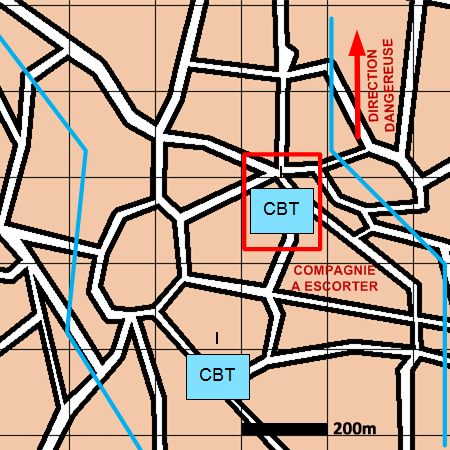

NIVEAU :Automate
ARME :Melee
MISSION :Escorter
Objectif principal
- Appuyer
- Détruire / Neutraliser
Modalités d'exécution
-
La compagnie à escorter doit avoir la mission "Pion COMMUNES Faire Mouvement" ou "Pion LOGISTIQUE Convoyer" ou "Automate COMMUNES Faire Mouvement" ;
-
Rejoindre la compagnie à escorter ;
-
Escorter la compagnie :
- Les unités du premier échelon escortent les unités de la compagnie passée en paramètre de mission ;
- Les unités de mêlée restant et les appuis feu appuient la compagnie à escorter ;
- Les autres éléments suivent le dispositif.
Schéma de modélisation

Paramètres obligatoires
Fuseau : Zone de responsabilité.
Direction Dangereuse : Orientation privilégiée des capteurs.
Unité ou Automate : L'unité ou la compagnie à escorter.
Paramètres optionnels
Nombre d'echelons (1 par défaut)